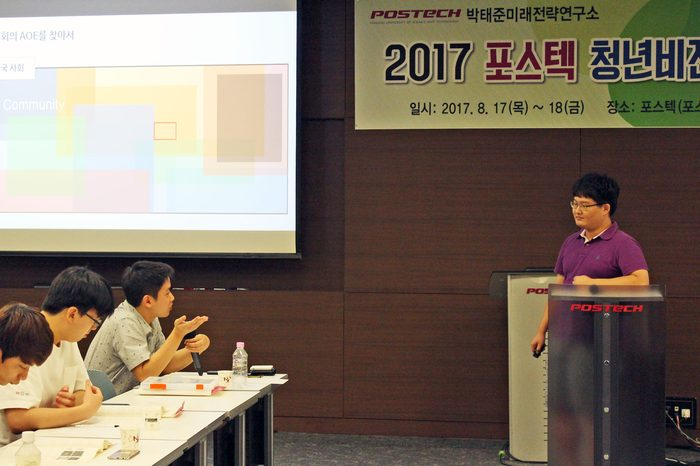
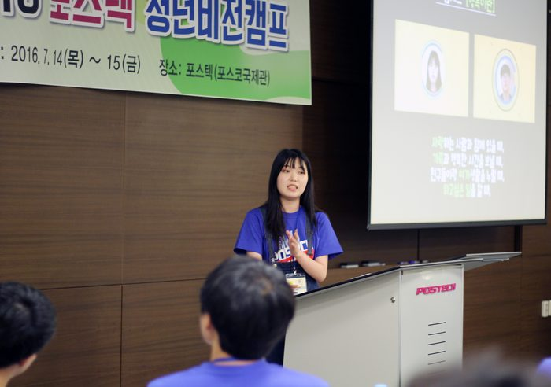

전체 9건

2016 에세이 우수상 - 김형근(연세대학교)
연구에만 갇혀 막상 처음 공부의 목적지로 삼았던 사회에 등 돌리고 있었던 제 자신에 대해 반성하게 되었습니다.

2018 에세이 대상 - 이수현, 백승연(서울여대)
"갈등 해소의 실마리는 일방향이 아닌 쌍방향적 노력을 기울이는 것에 있다고 생각해서, 젠더갈등에 관해서도 남성과 여성의 상황을 모두 분석하고 최선의 접점을 찾아내 담아내기 위해 노력했습니다."

2018 공모전 최우수상 - 육솔(POSTECH)
"지금 내가 이야기하는 것을 한 단어, 한 문장으로 어떻게 말 할 수 있을 것인가를 고민하는 것이 도움이 많이 된다고 생각합니다."

2018 공모전 최우수상 - 박준수(경희대)
"제가 제안하는 세대 갈등의 해결방안은 상대의 세대로 부터 배우는 게 아니라 가르치는 것입니다 . 제가 10 대 아이들이라는 청자를 생각하고 수업을 시작한 것은 아이들을 이해하기 시작한 것이기도 했습니다 ."

2017 에세이 대상 - 노현태(한양대), 유용재(서울대)
"한국 사회에서 사용되는 언어가 가지는 문제점을 체계화하고자 했고, 우리의 언어가 보다 성숙해지기 위해서는 어떠안 대안들이 필요한지 구체적으로 제시하고자 했다."

2017 에세이 최우수상 - 송은호(서울대)
"정보화가 진척됨에 따라서 사회 각론에 대해서는 새로운 의미의 ‘시민 의식’이 생겨나고 있습니다. 그런 과정에서는 우리 사회가 더 이상 어떤 시민 의식을 가져야 하는지를 고르기보다, 여러 시민 의식 사이의 균형을 어떻게 맞출 것인가에 더 초점을 맞춰야 된다고 생각합니다

2017 에세이 최우수상 - 배형준(연세대학교)
"아무런 생각 없이, 그리고 세상을 바라보는 나만의 프레임 없이 삶을 사는 것과 그렇지 않은 것의 차이는 삶의 질에 굉장히 큰 차이를 가져온다고 생각한다."

2016 UCC 대상 - 배주현(경기과기대)
"행복해지려면 어떻게 해야하는지에 대한 나의 생각을 담아 모션그래픽 영상으로 제작했다."

2015 에세이 대상 - 박유진, 박윤정(이화여대)
"처음 생각했던 건 ‘기후변화’였어요. 여기에다 열대지방의 전염병에 관한 내용을 접목시키면 어떨까 하는 생각에서 '전염병'으로 가닥이 잡혔던 것 같아요. 이 주제를 잘 발전시키면 다른 에세이들과는 차별되는 전문적인 글이 나오지 않을까 생각했어요."
※ The publications and records listed here are in Korean. Titles are shown as published.